I am in the second year of the master's degree in Econometrics and Statistics, applied econometrics track (M2 ECAP), at IAE Nantes.
What the programme covers
A two-year programme in economics, econometrics, statistics and computing. Courses include time series and forecasting, macro and financial econometrics, panel and spatial econometrics, public policy evaluation, credit-risk scoring, biostatistics, machine learning and text mining. Software: R, Python, SQL, Power BI, R Shiny, Stata and QGIS.
What I am looking for
A six-month end-of-studies internship starting in March 2027 (three months minimum), in econometrics, statistics, data analysis or finance.
My approach
03
To empirical work
Every project on this page follows the same four rules. Each project card then gives the question, the data, the method, the result and the limits, and ends with the figure that shows the main result.
Out of sampleA forecast is judged on data the model has not seen, with expanding or rolling windows.
Simple benchmarksEach model is compared with a random walk, a mean or an autoregression, and the difference is tested.
Negative results stayWhen a model does not beat its benchmark, the page says so.
ReproducibleData downloads are scripted, seeds are fixed, and notebooks keep their outputs.
Analyses
04
Econometrics, forecasting, statistics and SQL
Twelve studies in Python, R and SQL, from the master's thesis to course projects. Each one answers a question with data. They are listed together, and the line under each title gives the field.
Impact of Fed and ECB monetary policy on financial returns
Master's thesis · monetary policy and markets
Python · OLS with robust errors · rolling windows · high-frequency shocks · Dash
Question
To what extent do ECB and Fed decisions influence the returns of French and US equity markets?
Data
297 months, April 2000 to December 2024. Returns of the CAC 40, S&P 500 and Nasdaq 100, nine CAC 40 sectors and four stocks (LVMH, BNP Paribas, Microsoft, Apple). Policy rates, 10-year yields, regime and QE dummies, with inflation, unemployment, the USD/EUR rate, VIX and oil as controls.
Method
Five nested OLS models per index with robust errors, 84-month rolling windows, the same model for sectors and stocks, then regressions on announcement surprises split into a policy shock and an information shock. Diagnostic tests at the 10% level.
Results
A one-point rise in the ECB rate, two months earlier, lowers the monthly return by 1.4 points for the CAC 40, 0.8 for the S&P 500 and 0.9 for the Nasdaq 100.
The Fed rate in level has no negative effect.
Long rates act in opposite directions: rising French yields lower the CAC 40 (-1.3 points per standard deviation) and rising US yields raise it (+1.9 points).
The VIX is the most stable driver (0.14 to 0.17 point for a 1% rise). A 1% depreciation of the dollar goes with +0.23 point for the CAC 40, +0.40 for the S&P 500 and +0.56 for the Nasdaq 100.
The ECB rate is significantly negative for 11 of 13 sectors and stocks, strongest for autos (-2.2 points).
In rolling windows the ECB effect is negative and significant in 95% of the windows ending between 2007 and 2015. Later it can only be estimated when the rate moves.
Announcement surprises: each market reacts first to its own central bank. The Fed shock also lowers the CAC 40 (-0.5%), and the ECB shock does not significantly move US indices.
Limits
At 10%, residuals are not normal, their variance is not constant, and serial correlation remains for the CAC 40, so all results use robust errors. The coefficients are conditional correlations, not causal effects. Monthly data dilute the reaction to an announcement.
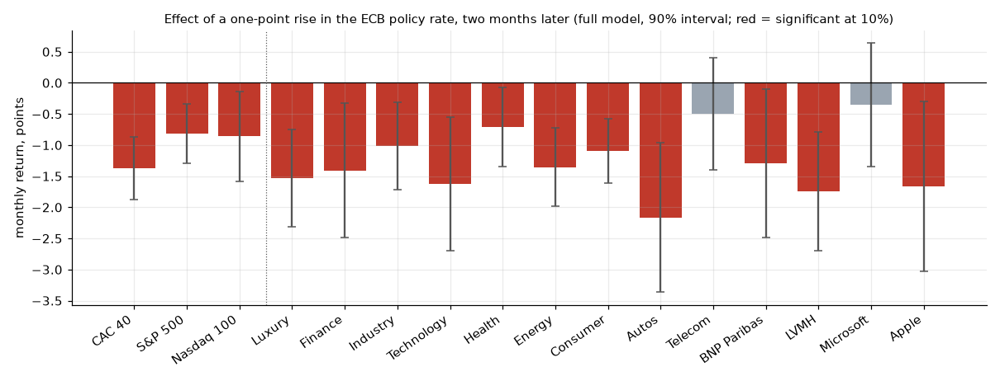
Main result: effect of a one-point rise in the ECB policy rate on the monthly return of each index, sector and stock. Red bars are significant at 10%.
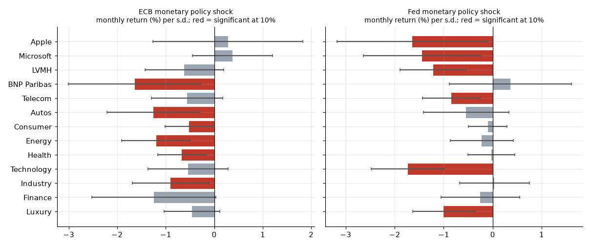
Extension: monthly return after an ECB or a Fed policy surprise.
Do macro predictors and machine-learning models beat a simple autoregression for US inflation?
Data
Twelve monthly FRED series. Forecasts from 2001 to 2026 at horizons of 1, 3, 6 and 12 months.
Method
Direct forecasts on an expanding window with an AR, a Phillips curve, ridge, lasso and a random forest. Hyper-parameters are tuned again every January on past data only.
Result
Before 2020 the random forest has a 9 to 19% lower RMSE than the AR at 3 to 12 months. Most of that gain comes from 2008-2009, and outside those two years it does not beat a 12-month average. After 2020 no model clearly beats the AR.
Limits
The data are the latest vintage, not what a forecaster saw in real time.
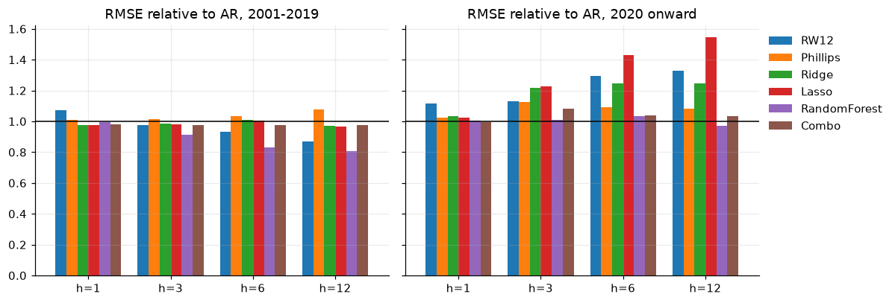
RMSE of each model relative to the AR. Below 1 is better.
Monetary policy and information shocks
Monetary policy
Identification · local projections · Fed and ECB
Question
What do Fed and ECB announcements do to output, prices and stocks once a policy surprise is separated from an information surprise?
Data
High-frequency shocks of Jarocinski and Karadi, from 1990 for the Fed and 1999 for the ECB, with monthly output, prices, yields and stock indices.
Method
Local projections over 36 months with 68% and 90% bands, and a check without the 2009-2015 period.
Result
On impact a Fed policy shock lowers US stocks by 1.1% and an ECB one lowers euro-area industrial production by 0.5%. Price responses to the policy shock are not distinguishable from zero.
Limits
The shocks are estimated series. The euro-area stock index starts in 2007, so its longer responses are not interpreted.
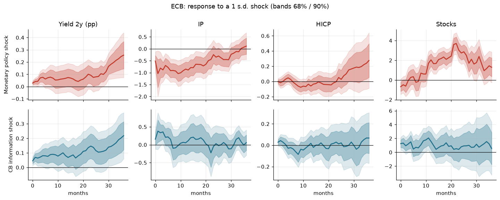
Responses to ECB policy shocks (top) and information shocks (bottom).
Nelson-Siegel and the yield curve
Yield curve and forecasting
Term structure · forecasting · recession signal
Question
Do three yield-curve factors forecast yields better than a random walk, and does the slope announce recessions?
Data
Nine US Treasury maturities, monthly, 1994 to 2026. NBER recession dates.
Method
Diebold-Li factors, direct AR and VAR forecasts of the factors from 2005, and a logit of recessions on the slope twelve months earlier, evaluated out of sample.
Result
The curve is fitted closely, but over the full test sample no factor model beats a random walk. From 2020 the factor VAR has lower errors for the 3-month yield, on a short sample that is not tested. The slope signal has an out-of-sample AUC of about 0.5.
Limits
The sample has three recessions, and the 2022-2024 inversion was not followed by one.
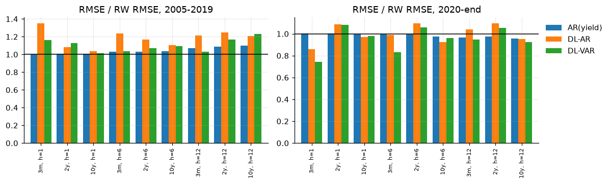
RMSE of yield forecasts relative to a random walk, by sub-period.
OAT-Bund spread: fundamentals or politics?
Sovereign spreads and politics
ARDL bounds test · event study · France
Question
How much of the French spread over Germany follows debt, and how did it react on political dates?
Data
Daily French and German 10-year yields, 2004 to 2026, and a monthly panel from 2013 to 2025 with debt, political uncertainty, VIX and the Italian spread.
Method
Error-correction model with a bounds test, an event study of two-day moves around six political dates, and local projections on an uncertainty shock.
Result
No cointegration is found, so no long-run claim is made. The 2024 dissolution moved the spread by +15 bp in two days (z = 8.8). The censure and confidence votes themselves were already priced in.
Limits
Six events only. The two yield series are not the same instrument, so the level of the spread is approximate.
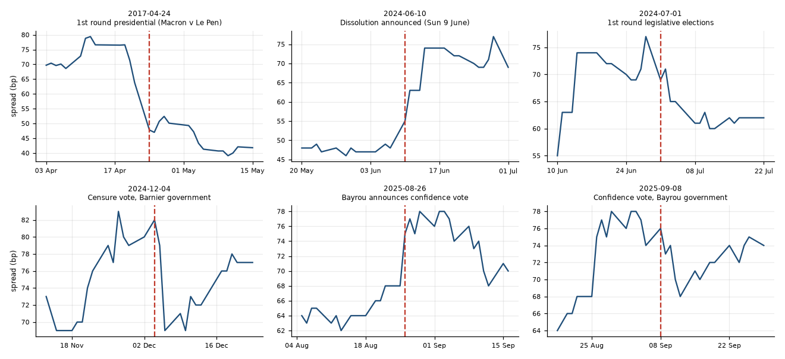
The spread three weeks before and after each political date.
Nowcasting French GDP
Nowcasting
Nowcasting · bridge equations · factor model
Question
Can monthly surveys predict the current quarter's GDP growth before it is published?
Data
Eurostat GDP growth and five monthly indicators for France. 63 quarters are nowcast from 2010.
Method
Three information sets per quarter, missing months filled by AR(1) projections, then bridge equations, ridge and a one-factor model.
Result
Without the COVID quarters the models beat an AR(1) by 6 to 12%, but they are only 0 to 5% better than the historical mean, and adding months 2 and 3 changes almost nothing.
Limits
Latest data vintages. Industrial production and PMIs are not in the free data used here.
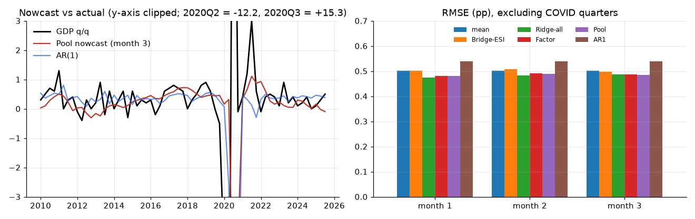
Nowcast against actual growth, and errors by month of the quarter.
Factor models: Food and Insurance
Asset pricing
Python · Fama-French · Newey-West coded from the formulas · structural breaks
Question
Which risk factors are two US industry portfolios exposed to, are the exposures stable, and did either earn an abnormal return?
Data
Kenneth French industry portfolios and the five Fama-French factors, 748 months from July 1963 to October 2025.
Method
CAPM, three-factor and five-factor regressions with OLS and Newey-West errors written from the matrix formulas, 60-month rolling loadings, a scan over break dates with a bootstrap critical value, and the GRS test.
Result
No abnormal return in any model. Both industries have a structural break, at different dates. A test at 2008 alone finds none for Insurance.
Limits
Two portfolios and standard factors only. The GRS test assumes normal residuals, which the data reject.
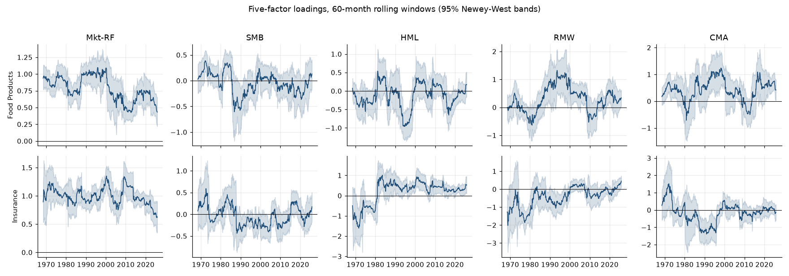
Factor loadings in 60-month windows with 95% bands.
Forecast evaluation: returns and volatility
Forecast evaluation
R · Diebold-Mariano · HAR · QLIKE
Question
Can an autoregression predict wheat futures returns, and which HAR model forecasts KOSPI 200 volatility best?
Data
Daily wheat futures (3,153 forecasts, 2010 to 2022) and KOSPI 200 realised variance (1,433 forecasts, 2007 to 2012).
Method
Rolling and expanding windows, zero, mean and persistence benchmarks, Diebold-Mariano and Mincer-Zarnowitz tests, the Sharpe ratio of a sign strategy, and QLIKE for volatility.
Result
No model beats a zero forecast for returns. For volatility, the HAR in logs significantly beats the random walk, and jump-robust regressors make forecasts worse.
Limits
Sign strategies ignore transaction costs. The KOSPI sample ends in 2012.
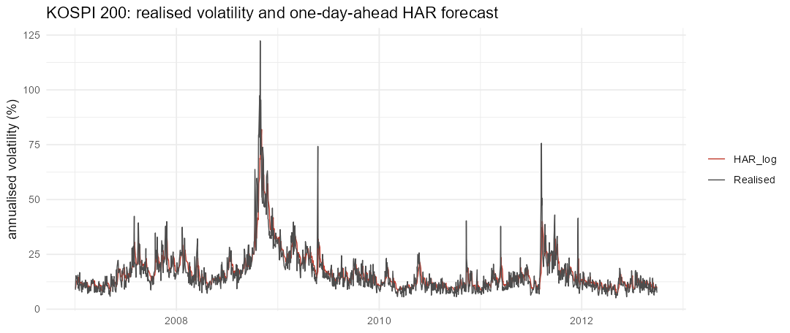
Realised volatility and the one-day-ahead HAR forecast.
Forecasting French inflation
Forecasting
R · direct forecasts · lasso · Diebold-Mariano
Question
Do oil, energy prices, the exchange rate and the 10-year yield improve inflation forecasts compared with an autoregression?
Data
241 months, January 2004 to January 2024.
Method
Direct forecasts at 1, 3, 6 and 12 months on an expanding window from 2012, with an AR, an AR with predictors, a lasso and a combination.
Result
The predictors do not beat an AR when only past information is used. If their future values were known, the same model would gain 6 to 29%.
Limits
Final-vintage data. Outlier correction is not included.
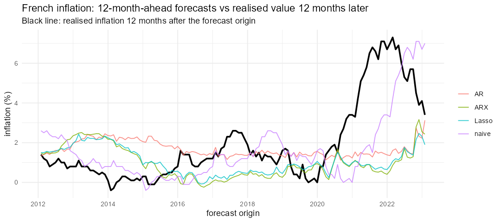
Forecasts made 12 months ahead and the realised value.
Imputing missing data
Statistics
R · simulation · MICE · Rubin's rules · group project
Question
On a small financial dataset, which imputation method recovers missing values best, and what does multiple imputation add?
Data
The 40 firms of the CAC 40 with seven quantitative variables.
Method
15% of the cells are deleted and imputed 300 times under two missingness mechanisms, with mean, median, PCA and two MICE methods.
Result
No method beats mean imputation with 40 firms. Listwise deletion inflates standard errors by 40 to 50%, and pooling over 20 imputations brings them back close to the complete-data values.
Limits
One dataset of 40 rows. The result describes this setting, not imputation in general.
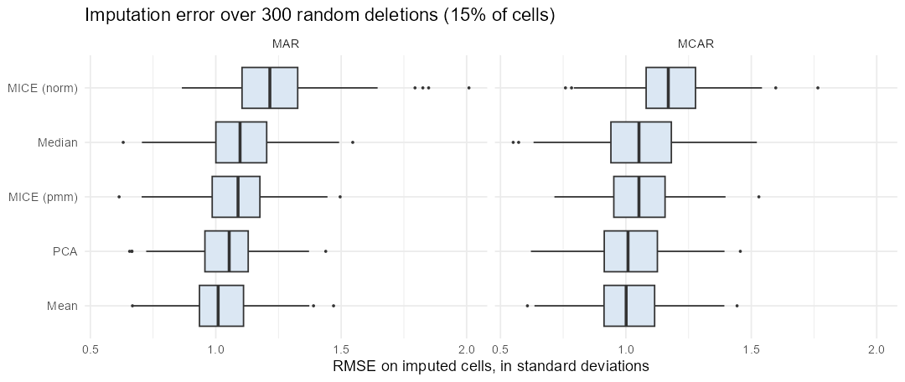
Error on imputed cells over 300 deletions. 1.0 is no better than the mean.
PCR, PLS and OLS for air quality
Statistics
R · latent-variable regression · chronological validation · group project
Question
With strongly correlated predictors, do PCR and PLS predict fine particles better than OLS?
Data
31,692 hourly observations at a Beijing station, March 2013 to February 2017.
Method
Training on 2013-2015 and test on 2016-2017, components chosen by blocked cross-validation, with OLS and a previous-hour forecast as benchmarks.
Result
PLS matches OLS with half the components but is not more accurate. A random split of hours flatters every model by 3 to 7%, and nothing beats the previous hour's value.
Limits
One station. Hours with missing values are dropped.
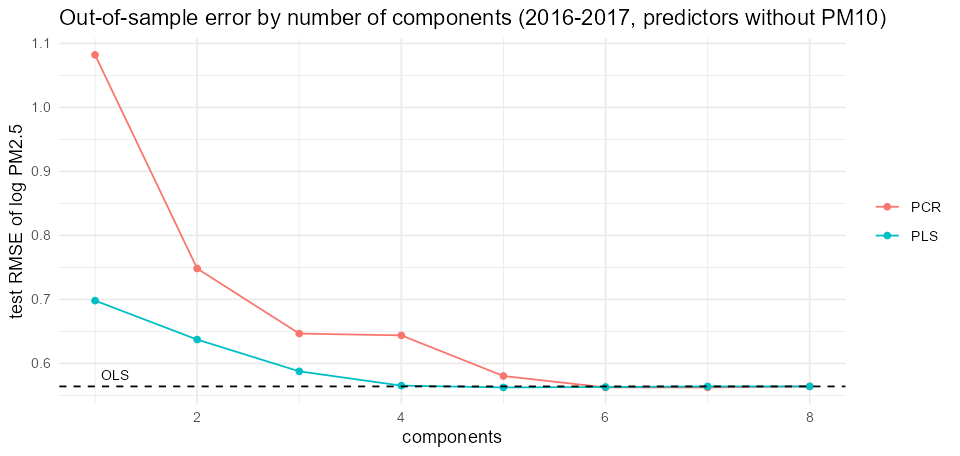
Test error by number of components. The dashed line is OLS.
SQL for macro and market data
Databases
SQLite · window functions · CTEs
What it is
A database built from public macro and market series, and six analytical queries.
What it shows
Of 56 month-ends with an inverted US yield curve, 32.1% were followed by a recession within a year, against 12.9% of the other months. The SQL event study gives the same spread moves as the Python notebook.
Limits
The sample covers three recessions.
-- How often does an inverted yield curve precede a recession within 12 months?
WITH month_end AS (
SELECT MAX(date) AS date FROM us_yields_daily GROUP BY substr(date, 1, 7)
), curve AS (
SELECT substr(y.date, 1, 7) AS ym, y.y_10y - y.y_3m AS slope
FROM us_yields_daily y JOIN month_end m ON y.date = m.date
), rec AS (
SELECT substr(month, 1, 7) AS ym,
MAX(recession) OVER (ORDER BY month ROWS BETWEEN 1 FOLLOWING AND 12 FOLLOWING) AS rec_next_12m
FROM us_monthly
)
SELECT CASE WHEN slope < 0 THEN 'inverted' ELSE 'normal' END AS curve_state,
COUNT(*) AS months,
ROUND(100.0 * SUM(rec_next_12m) / COUNT(*), 1) AS pct_followed
FROM curve JOIN rec USING (ym)
WHERE rec_next_12m IS NOT NULL
GROUP BY curve_state;
Curve state
Months
Followed by a recession
Inverted
56
32.1%
Normal
334
12.9%
One of the six queries, shortened by one column, and its result.
Dashboards
05
Visualisation tools
Two interactive tools that let a reader explore results: a Dash application and a Power BI report.
Thesis dashboard
Dash · Plotly
What it is
An interactive application on the thesis results. The user chooses an index, one of the five models and the rolling coefficients to display.
What it shows
The three most significant variables of the chosen model, every effect with its 95% interval, and the 84-month rolling coefficients with their band.
Limits
It runs locally and is not hosted online.
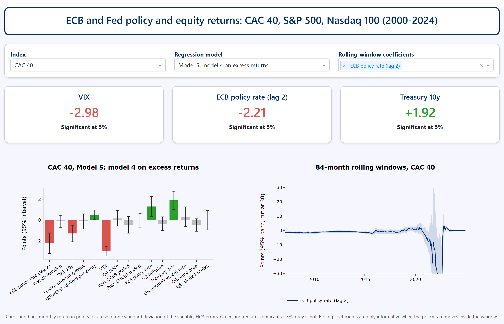
The dashboard for the CAC 40 and the full model.
SkyPort airport dashboard
Power BI · group project
What it is
A five-page report for an airport operator: a home page and four analysis pages with filters by year, airline, flight type and terminal.
What it shows
Activity and commercial revenue, delays and costs, passenger experience, and a risk index that ranks airlines.
Data
A fictitious dataset generated with AI. SkyPort is not a real airport.
Limits
The figures describe no real airport. The pages are shown as screenshots.
1. Overview: passengers, flights, revenue and its sources.
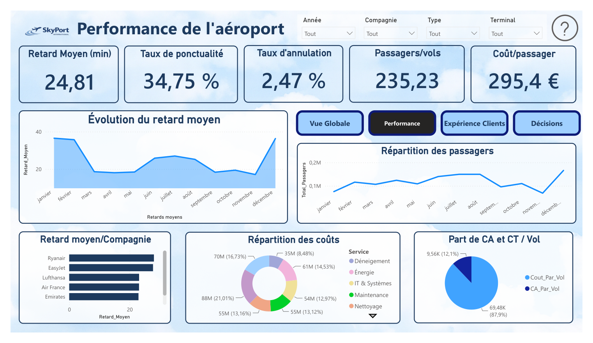
2. Airport performance: delays, punctuality, cancellations and costs.3. Customer experience: ratings, complaints and waiting time.
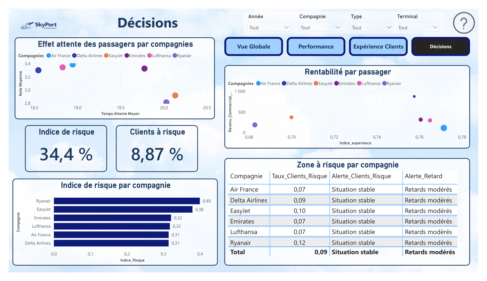
4. Decisions: risk index and alerts by airline.
Contact
06
And conclusion
I am looking for a six-month end-of-studies internship from March 2027 (three months minimum). I am open to roles in econometrics, statistics, data analysis and finance.